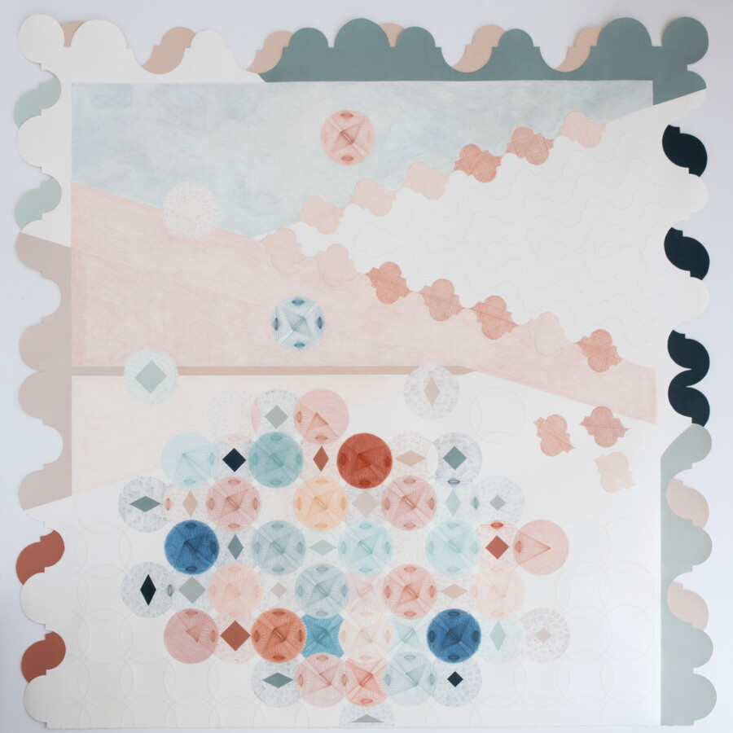

Vanessa Filley: Flying Kites in a Windless World
“Flying Kites in a Windless World,” an exhibition of watercolor, pinprick, pencil and thread drawings by Vanessa Filley, opens at OS Projects on May 9, 2026. The exhibition continues through July 11, 2026. On May 9, the public is invited to meet the artist during an opening reception taking place from 1 to 3 pm.
“Flying Kites in a Windless World” is composed of artworks from Filley’s projects over the past eight years. The works are inspired by a wide range of influences, including Emily Dickinson’s poem “We Send the Wave to Find the Wave,” drawings and weavings by Lenore Tawney, quilts passed down through generations, migratory patterns of birds, the shifting light of sunrise and sunset, and other investigations into the built and natural world.
Filley generates her paper-based works using a methodical, repetitive process which functions as an act of discovery for the artist and a form of ritual that opens a pathway to the spiritual. Doing the same things over and over again–dot making, stitching, blending pencil marks—facilitates a close analysis of the how and why of doing. Repetition also allows for pattern to emerge and invites the question of how something might grow, shift or evolve over time.
For Filley, moving through the world is an act of gathering disparate pieces—of “massing stardust,” in the artist’s words—that slowly cohere as experience is filtered into understanding. Her drawings, which can be likened to imagined cosmic maps, become the conduit for exploring an aspect of existence that is collective rather than individual.
Beyond capturing a single moment, Filley’s art practice seeks to bridge time, expand an understanding of the present and come into harmony with that which is beyond the self. Merging sacred geometry and geometric abstraction with the error and energy of the human hand, her artwork expresses how the act of making transforms the body into a portal through which something unknown can pass.
About the Artist
Vanessa Filley is a mixed media artist who lives and works in Evanston, IL. She is interested in the energetic threads that orient and connect us, ground us in place and time, yet tether us to our ancestral past and future, the lines that bring us home. Her work encompasses large scale sculptural installations, tiny embroidery pieces, poems, photographs and drawings in watercolor, pinprick and thread. Filley was voted one of Photolucida’s Top 50 in 2018 and has shown work nationally and internationally at various venues, including the Sonoma County Museum of Art, Berlin Photo Week, the Lishui Photography Festival (China), FOCUS photo l.a., Stricoff Gallery (New York), Western Michigan University, the Harold Washington Library (Chicago), the US Consulate General in Saudi Arabia, and the inaugural Cosmic Geometries show at Secrist Beach Gallery (Chicago) in 2024.
About OS Projects